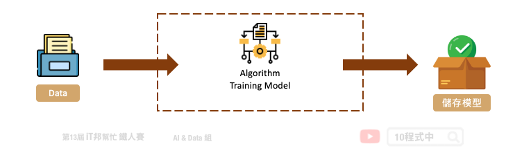

[Day 28] 儲存訓練好的模型
今日學習目標
- 使用 pickle + gzip 儲存模型
- 將訓練好的模型打包並儲存
- 載入儲存的模型
- 讀取打包好的模型並預測
範例程式：
前言
今天的教學內容要教各位如何將訓練好的模型儲存，並提供下一次載入模型和預測。在本系列的教學中介紹了許多 Sklearn 的模型演算法。當模型訓練好了，可以將訓練結果儲存起來，並建立一個 API 接口提供模型預測。

模型儲存方法
常見的儲存模型的套件有 pickle 與 joblib。其中在 [Day 20] 機器學習金手指 - Auto-sklearn 最後有使用 joblib 來儲存模型，操作方法也非常簡單。然而在今天的教學中則使用另一種方法 pickle 來儲存模型。由於 pickle 儲存模型後容量可能會有好幾百 MB 因此建議可以透過 gzip 來壓縮模型並儲存。另外在 Python 官方文件中有警告絕對不要利用 pickle 來 unpickle 來路不明的檔案。因為透過 pickle 打包模型會有安全性疑慮，包括 arbitrary code execution 的問題，詳細內容可以參考這篇文章。如果要追求執行速度與安全性，建議可以採用 JSON 格式來存取模型的參數與設定。
後記：這幾年ONNX模型通用格式也非常流行，除了神經網路之外也支援sklearn的模型儲存。大家不妨也可以試試看！
1) 載入資料集
今日的範例還是拿鳶尾花朵資料集進行示範。首先我們先載入資料集並進行資料的切割。
import pandas as pd import numpy as np import matplotlib.pyplot as plt import seaborn as sns from sklearn.datasets import load_iris iris = load_iris() df_data = pd.DataFrame(data= np.c_[iris['data'], iris['target']], columns= ['SepalLengthCm','SepalWidthCm','PetalLengthCm','PetalWidthCm','Species']) df_data
2) 切割訓練集與測試集
from sklearn.model_selection import train_test_split X = df_data.drop(labels=['Species'],axis=1).values # 移除Species並取得剩下欄位資料 y = df_data['Species'].values X_train, X_test, y_train, y_test = train_test_split(X, y, test_size=0.3, random_state=42, stratify=y) print('train shape:', X_train.shape) print('test shape:', X_test.shape)
訓練模型 - XGBoost
XGBoost 模型是目前最熱門的演算法模型之一，詳細的內容可以參考 [Day 15] 機器學習常勝軍 - XGBoost。裡面會有介紹詳細的模型說明與手把手實作。當然大家也可以試著用其他 Sklearn 的模型訓練看看，一樣可以透過 pickle 來儲存訓練好的模型。
from xgboost import XGBClassifier # 建立 XGBClassifier 模型 xgboostModel = XGBClassifier(n_estimators=100, learning_rate= 0.3) # 使用訓練資料訓練模型 xgboostModel.fit(X_train, y_train) # 使用訓練資料預測分類 predicted = xgboostModel.predict(X_train)
儲存 XGboost 模型
大家可以觀察 .pickle 與 .gzip 兩種不同副檔名儲存結果檔案大小有何差別?
1. 使用 pickle 儲存模型
import pickle with open('./model/xgboost-iris.pickle', 'wb') as f: pickle.dump(xgboostModel, f)
2. 使用 pickle 儲存模型並利用 gzip 壓縮
import pickle import gzip with gzip.GzipFile('./model/xgboost-iris.pgz', 'w') as f: pickle.dump(xgboostModel, f)

載入 XGboost 模型
試著載入兩種不同格式的模型，並預測一筆資料。注意模型預測輸入必須為 numpy 型態，且須為二維陣列格式。
1. 載入 gzip 格式模型
import pickle import gzip #讀取Model with gzip.open('./model/xgboost-iris.pgz', 'r') as f: xgboostModel = pickle.load(f) pred=xgboostModel.predict(np.array([[5.5, 2.4, 3.7, 1. ]])) print(pred)
2. 載入 pickle 格式模型
#讀取Model with open('./model/xgboost-iris.pickle', 'rb') as f: xgboostModel = pickle.load(f) pred=xgboostModel.predict(np.array([[5.5, 2.4, 3.7, 1. ]])) print(pred)
Reference
本系列教學內容及範例程式都可以從我的 GitHub 取得！